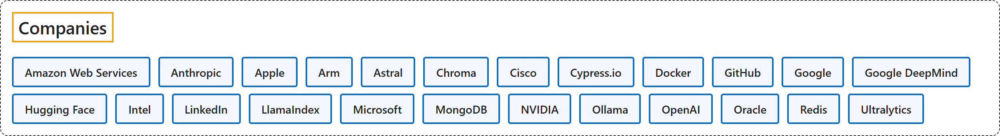

8. Companies
Classification

Glossary
| Term | Definition | 中文翻译 | Source |
|---|---|---|---|
| Companies 公司 |
"an organization that sells goods or services in order to make money" | 一个销售商品或服务以赚钱的组织 | Cambridge University Press & Assessment, n.d., "company" noun (BUSINESS) |
| Amazon Web Services 亚马逊云科技 |
"AWS is the world's most comprehensive cloud, enabling organizations to accelerate innovation, reduce costs, and scale more efficiently" | AWS 是全球最全面的云，帮助组织加速创新、降低成本并更高效地扩展。 | Amazon Web Services, n.d., para. 1 |
| Anthropic Anthropic |
"AI will have a vast impact on the world. Anthropic is a public benefit corporation dedicated to securing its benefits and mitigating its risks." | AI 将对世界产生巨大影响。Anthropic 是一家公益公司，致力于确保 AI 的益处并降低其风险。 | Anthropic, n.d., para. 1 |
| Apple 苹果 |
"Apple revolutionized personal technology with the introduction of the Macintosh in 1984. Today, Apple leads the world in innovation with iPhone, iPad, Mac, AirPods, Apple Watch, and Apple Vision Pro." | Apple 于 1984 年推出 Macintosh，彻底改变了个人科技。如今，Apple 凭借 iPhone、iPad、Mac、AirPods、Apple Watch 和 Apple Vision Pro 引领全球创新。 | Apple, 2026, "About Apple" section, para. 1 |
| Arm Arm |
"Arm powers the compute foundation of modern life, with more than 350 billion Arm-based chips shipped to date." | Arm 为现代生活提供计算基础，迄今已出货超过 3500 亿颗基于 Arm 的芯片。 | Arm, n.d., para. 1 |
| Astral Astral |
"We build high-performance developer tools for the Python ecosystem." | 我们为 Python 生态系统构建高性能开发者工具。 | Astral, n.d., para. 1 |
| Chroma Chroma |
"AI agents need the right context, extremely quickly, with as little infrastructure concerns as possible. We're building the data & search infrastructure that makes this possible." | AI 智能体需要极快地获得正确的上下文，同时尽量少地操心基础设施。我们正在构建实现这一点的数据与搜索基础设施。 | Chroma, n.d., para. 1 |
| Cisco 思科 |
"Cisco is the worldwide technology leader that is revolutionizing the way organizations connect and protect in the AI era." | 思科是全球技术领导者，正在彻底改变 AI 时代组织连接与保护的方式。 | Cisco Systems, n.d., para. 1 |
| Cypress.io Cypress.io |
"Cypress testing tools support developers all around the world by making it easier to build and test applications." | Cypress 测试工具为世界各地的开发者提供支持，使构建和测试应用程序更加容易。 | Cypress.io, n.d., para. 1 |
| Docker Docker |
"Docker changed how the world ships software. Now we’re defining how AI applications and agents are built, run, and governed securely." | Docker 改变了世界交付软件的方式。如今，我们正在定义 AI 应用和智能体如何构建、运行和治理，并确保其安全。 | Docker, n.d., para. 1 |
| GitHub GitHub |
"The complete developer platform to build, scale, and deliver secure software." | 完整的开发者平台，用于构建、扩展和交付安全的软件。 | GitHub, n.d., para. 1 |
| Google 谷歌 |
"Our mission is to organize the world’s information and make it universally accessible and useful" | 我们的使命是整合全球信息，使其人人皆可访问并从中受益。 | Google, n.d., para. 1 |
| Google DeepMind 谷歌 DeepMind |
"Google DeepMind brings together two of the world’s leading AI labs — Google Brain and DeepMind — into a single, focused team led by our CEO Demis Hassabis." | Google DeepMind 将全球两大领先 AI 实验室（Google Brain 和 DeepMind）整合为一支由首席执行官 Demis Hassabis 领导的专注的统一团队。 | Google DeepMind, n.d., para. 6 |
| Hugging Face Hugging Face |
"We are on a mission to democratize good machine learning, one commit at a time." | 我们的使命是让优秀的机器学习普及大众，一次提交一步。 | Hugging Face, n.d., para. 1 |
| Intel 英特尔 |
"Intel (Nasdaq: INTC) designs and manufactures advanced semiconductors that connect and power the modern world." | 英特尔（Nasdaq: INTC）设计和制造先进半导体，连接并驱动现代世界。 | Intel Corporation, 2026, "About Intel" section, para. 1 |
| LinkedIn 领英 |
"Welcome to LinkedIn, the world's largest professional network with more than 1 billion members" | 欢迎来到 LinkedIn，全球最大的职业社交网络，拥有超过 10 亿会员。 | LinkedIn, n.d., "About LinkedIn" section, para. 1 |
| LlamaIndex LlamaIndex |
"LlamaIndex is the platform enterprises choose to leverage AI Agents for document OCR + AI workflows." | LlamaIndex 是企业首选的平台，用于借助面向文档 OCR 和 AI 工作流的 AI 智能体开展工作。 | LlamaIndex, n.d., para. 1 |
| Microsoft 微软 |
"Microsoft’s mission is to empower every person and every organization on the planet to achieve more." | 微软的使命是予力全球每一人、每一组织，成就不凡。 | Microsoft, n.d., para. 1 |
| MongoDB MongoDB |
"MongoDB empowers innovators with our intelligent data platform for modern, real-time, hybrid, multi-cloud applications in the AI era." | MongoDB 以我们的智能数据平台赋能创新者，支持 AI 时代的现代、实时、混合、多云应用。 | MongoDB, n.d., "What we do" section, para. 1 |
| NVIDIA 英伟达 |
"NVIDIA engineers the most advanced chips, systems, and software for the AI factories of the future." | NVIDIA 为未来的 AI 工厂打造最先进的芯片、系统和软件。 | NVIDIA, n.d., para. 4 |
| Ollama Ollama |
(context) "Ollama is the most popular way to build with open models." | （语境）Ollama 是最受欢迎的使用开放模型进行构建的方式。 | Ollama, n.d., para. 1 |
| OpenAI OpenAI |
"OpenAI was founded in 2015 as a nonprofit. Its mission is to ensure that artificial general intelligence benefits all of humanity." | OpenAI 于 2015 年作为一家非营利组织成立。其使命是确保通用人工智能造福全人类。 | OpenAI, n.d., para. 1 |
| Oracle 甲骨文 |
"Oracle offers integrated suites of applications plus secure, autonomous infrastructure in the Oracle Cloud." | Oracle 在 Oracle 云中提供集成的应用套件以及安全、自治的基础设施。 | Oracle, 2026, "About Oracle" section, para. 1 |
| Redis Redis |
"We’re the world’s fastest data platform." | 我们是全球最快的数据平台。 | Redis, n.d., para. 1 |
| Ultralytics Ultralytics |
"We’re on a mission to push the boundaries of AI through relentless execution, creating the world’s best open-source solutions." | 我们的使命是通过不懈执行来突破 AI 的边界，打造全球最好的开源解决方案。 | Ultralytics, n.d., para. 1 |
References
Amazon Web Services. (n.d.). About AWS. Retrieved October 27, 2026, from https://aws.amazon.com/about-aws/
Anthropic. (n.d.). Company. Retrieved October 27, 2026, from https://www.anthropic.com/company
Apple. (2026, October 27). Apple unveils new iMac with M6. Retrieved October 27, 2026, from https://www.apple.com/newsroom/2026/10/apple-unveils-new-imac-with-m6/
Arm. (n.d.). About Arm, company value and history. Retrieved October 27, 2026, from https://www.arm.com/company
Astral. (n.d.). About. Retrieved October 27, 2026, from https://astral.sh/about
Cambridge University Press & Assessment. (n.d.). Company. In Cambridge Dictionary. Retrieved October 27, 2026, from https://dictionary.cambridge.org/dictionary/english/company
Chroma. (n.d.). Careers at Chroma. Retrieved October 27, 2026, from https://www.trychroma.com/careers
Cisco Systems. (n.d.). Cisco Systems Inc. - Investor relations. Retrieved October 27, 2026, from https://investor.cisco.com/home/default.aspx
Cypress.io. (n.d.). About the team building Cypress. Retrieved October 27, 2026, from https://www.cypress.io/about-us
Docker. (n.d.). About Docker. Retrieved October 27, 2026, from https://www.docker.com/company/
GitHub. (n.d.). About GitHub. Retrieved October 27, 2026, from https://github.com/about
Google. (n.d.). About Google: History, office locations, commitments, initiatives. Retrieved October 27, 2026, from https://about.google/company-info/
Google DeepMind. (n.d.). About Google DeepMind. Retrieved October 27, 2026, from https://deepmind.google/about/
Hugging Face. (n.d.). huggingface (Hugging Face). Retrieved October 27, 2026, from https://huggingface.co/huggingface
Intel Corporation. (2026, October 12). Intel accelerates open infrastructure for the agentic AI era. Retrieved October 27, 2026, from https://www.intc.com/news-events/press-releases/detail/1783/intel-accelerates-open-infrastructure-for-the-agentic-ai-era
LinkedIn. (n.d.). About LinkedIn. Retrieved November 3, 2026, from https://about.linkedin.com/
LlamaIndex. (n.d.). LlamaIndex - About us. Retrieved October 27, 2026, from https://www.llamaindex.ai/about
Microsoft. (n.d.). Our mission and values. Retrieved October 27, 2026, from https://www.microsoft.com/en-us/about
MongoDB. (n.d.). About MongoDB. Retrieved October 27, 2026, from https://www.mongodb.com/company
NVIDIA. (n.d.). About us: Company leadership, history, jobs, news. Retrieved October 27, 2026, from https://www.nvidia.com/en-us/about-nvidia/
Ollama. (n.d.). Ollama. Retrieved October 27, 2026, from https://ollama.com/
OpenAI. (n.d.). Our structure. Retrieved October 27, 2026, from https://openai.com/our-structure/
Oracle. (2026, September 22). Arvato Systems runs European medicines verification system on Oracle EU sovereign cloud. Retrieved October 27, 2026, from https://www.oracle.com/news/announcement/arvato-systems-runs-european-medicines-verification-system-on-oracle-eu-sovereign-cloud-2026-09-22/
Redis. (n.d.). Company. Retrieved October 27, 2026, from https://redis.io/company/
Ultralytics. (n.d.). Ultralytics team. Retrieved October 27, 2026, from https://www.ultralytics.com/about